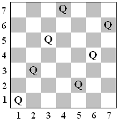
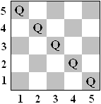
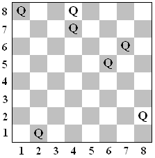

| Source file: | collision.{c, cpp, java} |
| Input file: | collision.in |
|  |
 |
 |
| Figure 1 | Figure 2 | Figure 3 |
Lots of time has been spent by computer science students dealing with
queens on a chess board. Two queens on a chessboard collide
if they lie on the same row, column or diagonal, and there is no piece
between them. Various sized square boards and numbers
of queens are considered. For example, Figure 1, with a 7 x 7 board, contains 7
queens with no collisions. In Figure 2 there is a 5 x 5 board
with 5 queens and 4 collisions. In Figure 3, a traditional 8 x 8
board, there are 7 queens and 5 collisions.
On an n x n board, queen positions are given
in Cartesian coordinates (x, y) where x is a column number, 1 to n, and y is a row number, 1 to n. Queens at distinct
positions (x1, y1) and (x2, y2)
lie on the same diagonal if (x1- x2) and (y1-
y2) have the same magnitude. They lie on the same row
or column if x1= x2 or y1= y2,
respectively.
In each of these cases the queens have a collision if there is no other
queen directly between them on the same diagonal, row, or column, respectively.
For example, in Figure 2, the collisions are between the queens at (5, 1) and (4, 2), (4, 2) and (3, 3), (3, 3) and
(2, 4), and finally (2, 4) and (1, 5). In Figure 3, the
collisions are between the queens at (1, 8) and (4, 8), (4, 8)
and (4, 7), (4, 7) and (6, 5), (7, 6) and (6, 5), and
finally (6, 5)
and (2, 1). Your task is to count queen collisions.
Input: The input will consist of one to twenty data sets, followed by a line containing only 0.
The first line of a dataset contains blank separated
positive integers n g,
where n
indicates an n x n board size, and g is the number of linear patterns of
queens to be described, where n
< 30000, and g <
250. The next g lines
each contain five blank separated integers, k x y s t, representing a linear
pattern of k queens at
locations (x + i*s,
y +i*t),
for i = 0, 1, ..., k-1. The value of k is positive. If k
is 1, then the values of s and t are irrelevant, and they will be given
as 0. All queen positions will be on the board. The total
number of queen positions among all the linear patterns will be no more
than n, and all these queen
positions will be distinct.
Output: There is one line of output for each data set, containing only the number of collisions between the queens.
The sample input data set corresponds to the configuration in the
Figures.
Take some care with your algorithm, or else your solution may take
too long.
| Example input: | Example output: |
| 7 2 4 1 1 1 2 3 5 2 1 2 5 1 5 5 1 -1 1 8 3 1 2 1 0 0 3 1 8 3 -1 3 4 8 2 -3 0 |
0 4 5 |